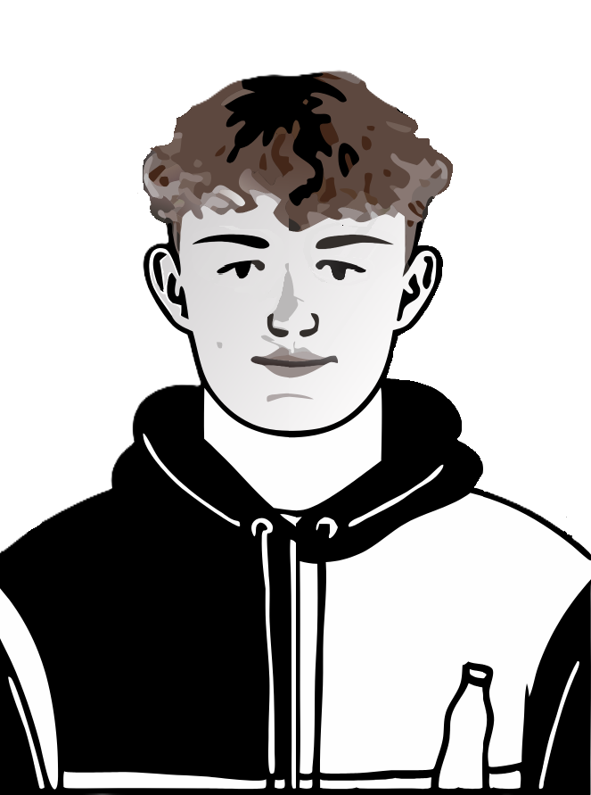

Mes expériences
Mes compétence
Ma formation
Ethan Froidevaux
Apprenti de première année en informatique.
Mes expériences professionelles
Depuis 2022
Arbitre régional de inline hockey
Mes compétences
Compétences de base HTML
Compétence de base C++
Compétences de base SQL
Ma formation
Ecole primaire
de la Baroche de 2013 à 2021
Ecole secondaire
au collège Thurmann jusqu'à 2024
Formation d'informaticien
à l'EMT, débuter en 2024